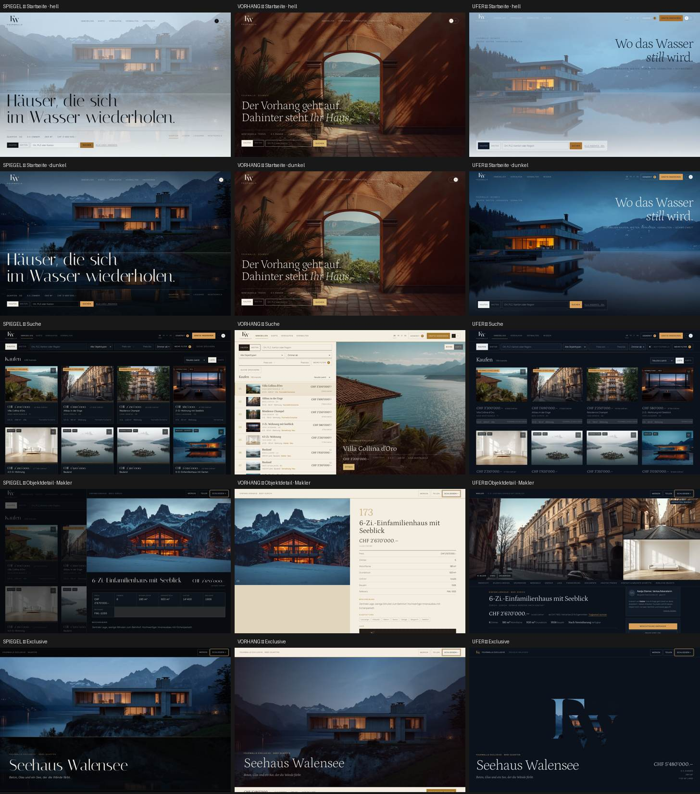
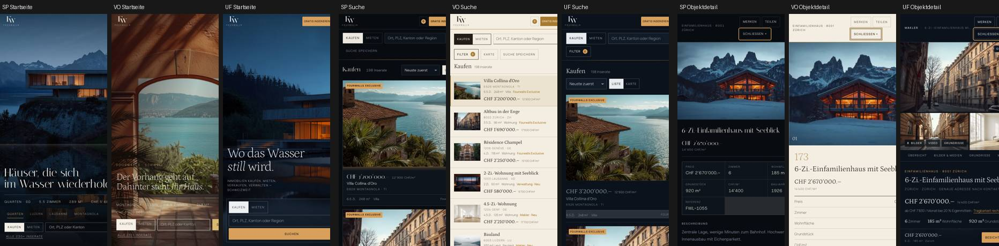
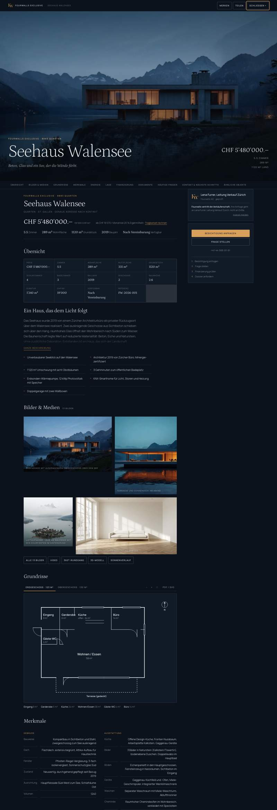

Der dritte Finalist Ufer ist die verlangte Synthese: Spiegels Farbe, Disziplin und Wasser, Vorhangs Typografie und Bewegung — neu art-direktiert, nicht zusammengeklebt. Dazu Objektseiten in Neho-Tiefe, eine Navigation in Properti-Klarheit und Walde-Zurückhaltung im Rhythmus. Alle drei tragen dasselbe Produkt.
Grand Final II ist als grandfinal-ii-freeze eingefroren, R8 bleibt audit-freeze-r8. Spiegel und Vorhang wurden nicht angefasst. Die Live-Reviews von Neho, Properti und Walde sind dokumentiert (Neho, Properti, Walde), die übertragbaren Prinzipien in gf3-principles.md.



| Screen | Spiegel | Vorhang | Ufer | Vorne |
|---|---|---|---|---|
| Startseite | Ein Satz, ein Haus, Vier-Wege-Leiste | Torbogen, Doppelflügel | Lebendiges Wasser, Fenster-Intro, Steg, Vier Wege, «Mehr, wenn Sie es brauchen» | Ufer (5-Sekunden-Test und Entdeckung) |
| Suche | Lichtkarten-Raster | Programmzeilen + Bühne | Ruhiges Raster, Wasserlinie je Karte, «Nur Fourwalls», Suchabo-Zeile | Vorhang (Dichte) · Ufer (Alltag) |
| Karte | Lichtpins | Ochsenblut, Stoffstreifen | Stilles Wasser, Seen angedeutet, Lichtpins | Gleichauf |
| Objektdetail | Overlay, Faktenraster | Zwei Spalten, Faktenliste | Anker-Menü, 11 Stationen, Grundrisse, Lage, Finanzierung, Dokumente | Ufer, deutlich |
| Exclusive | Kino-Hero, Spiegelung | Doppelvorhang, römische Kapitel | Fenster-Premiere, dann die vollständige Seite | Ufer (spektakulär und vollständig) |
| Verkaufen | Zwei Wege | Zwei Akte, Etappen | Hub «Ich möchte …», zehn Etappen, ehrliche Bewertung, FAQ | Ufer |
| Verwaltung | Vier Ressorts | Kapitel | Ressorts, acht Leistungen, Report-Kachel, Preise, Offerte | Ufer |
| Wissen · Rechner | — | — | Tragbarkeit, Kaufnebenkosten nach Kanton, Ratgeber nach Rolle, Markt | nur Ufer |
| Mobil | Karten stapeln | Liste bleibt, Bühne fällt weg | Eigener Hero-Anschnitt, Steg, Detail mit Klebe-CTA | Spiegel · Ufer gleichauf |
| Wiederholte Nutzung | Ruhig | Vorhangwechsel bei jeder Auswahl | Portal ohne Theater; Bewegung nur bei Ankunft, Premiere, Fenster | Spiegel · Ufer |
| Kriterium | Max | Spiegel | Vorhang | Ufer | Begründung |
|---|---|---|---|---|---|
| Portal-Usability | 20 | 17 | 16 | 18 | Ufer: vertrautes Raster plus Anker-Detail, Toggle, Suchabo-Zeile, Konto mit Anfragen |
| Visual / Brand | 20 | 17 | 18 | 18 | Ufer hat zwei ownbare Signaturen (Wasser, Fenster); Vorhang trägt seine DNA bis in die Liste |
| Mobile | 15 | 13 | 12 | 13 | Ufer verliert das Wasserspiel teilweise, nicht die Identität |
| Informationsdichte | 10 | 7 | 9 | 8 | Ergebnisse: 8 pro Bildschirm; Objektseite: Tiefe auf Abruf statt Wand |
| Skalierbarkeit | 10 | 8 | 8 | 8 | Gleicher Kern; Detailschema trägt 100k Objekte mit fehlenden Feldern |
| Makler + Verwaltung | 10 | 8 | 9 | 9 | Ufer: Hub, Etappen, Report, Offerte, Preise offen |
| Performance-Potenzial | 10 | 8 | 8 | 8 | Ufer-Portal 29 KB gz + 7 KB Dossiers, Hero-WebP 29 KB, Shader nur auf der Startseite, still degradierend |
| Barrierefreiheit | 5 | 4 | 4 | 4 | Tastatur, Escape, Fokus auf Schliessen, reduced-motion; Lightbox-Fokusfalle nur einfach |
| Total | 100 | 82 | 84 | 86 | Abstände 2 — bewusst nicht entscheidend |
| Zusatz | Spiegel | Vorhang | Ufer |
|---|---|---|---|
| WOW | 8 | 9 | 9 |
| Unverwechselbarkeit | 7 | 9 | 8 |
| Tägliche Benutzbarkeit | 9 | 8 | 9 |
| Marken-Ownability (Signatur ausserhalb der Website) | 7 | 8 | 9 |
| Qualität Objektseite | 6 | 6 | 9 |
| Informationsarchitektur | 7 | 7 | 9 |
Ufer ist der vollständigste Fourwalls-Auftritt, den wir gebaut haben: Er erfüllt den Fünf-Sekunden-Test, den Fünf-Minuten-Test am Objekt und den Dreissig-Minuten-Test im Portal gleichzeitig — und er besitzt zwei Signaturen, die auch ohne Website als Fourwalls erkennbar wären. Wenn die Frage lautet «Womit wären wir in fünf Jahren noch zufrieden?», ist es der Kandidat mit den wenigsten Kompromissen.
Vorhang bleibt die unverwechselbarste Welt in der Ergebnisliste und die stärkste Bühne für Exclusive; Spiegel die ruhigste für den Alltag. Beide sind reifer als Ufer, weil sie länger gewachsen sind. Die Entscheidung ist visuell: Grand Final öffnen, dieselbe Seite dreimal ansehen, hell und dunkel, am Telefon.
detail-data.js), SSR für SEO; Dokumente mit Zugangsstufen serverseitig durchgesetzt.fetchpriority=high; Grundrisse als SVG (currentColor) oder gerendertes PDF-Preview.Desktop 1440 · Mobil 390 · hell · dunkel · Navigation (Tafeln, Blatt, Escape) · Suche · Filter · Karte (Desktop und Mobil) · Standard-, reiche und Exclusive-Objektseite · Grundrisse · Galerie/Lightbox · Dokumentstufen · Gratis inserieren · Verkaufen · Verwaltung · Wissen · Konto · Tastatur (Karte öffnen, Fokus auf Schliessen, Escape) · reduced-motion · Konsole ohne Fehler · horizontaler Overflow 0 · FR/IT ohne Umbruchfehler · Bilder responsiv (WebP/JPEG, 3 Breiten, lazy) · WebGL-Rückfall still. Wettbewerber-Gate: keine Komposition, Schrift, Farbe, Karte oder Navigation von Neho, Properti oder Walde übernommen.
Fourwalls Design-Turnier · Grand Final III · Version final/ · Stand 2. September 2026